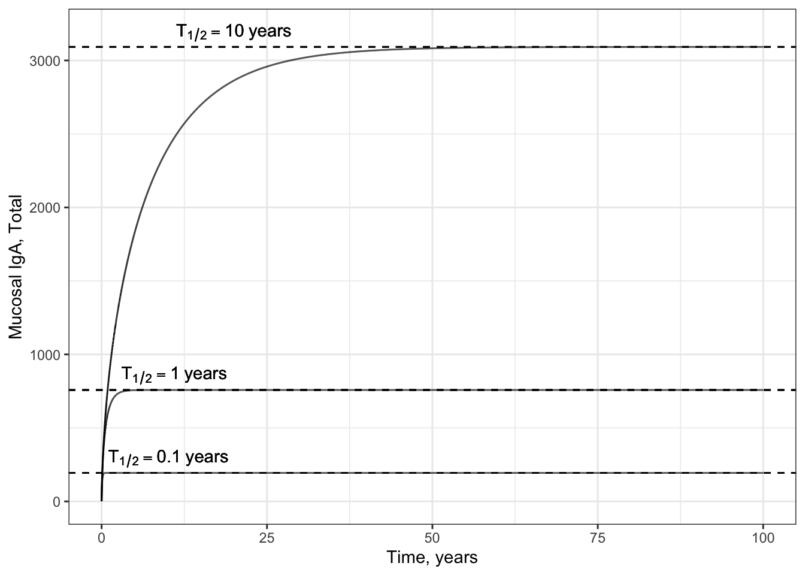
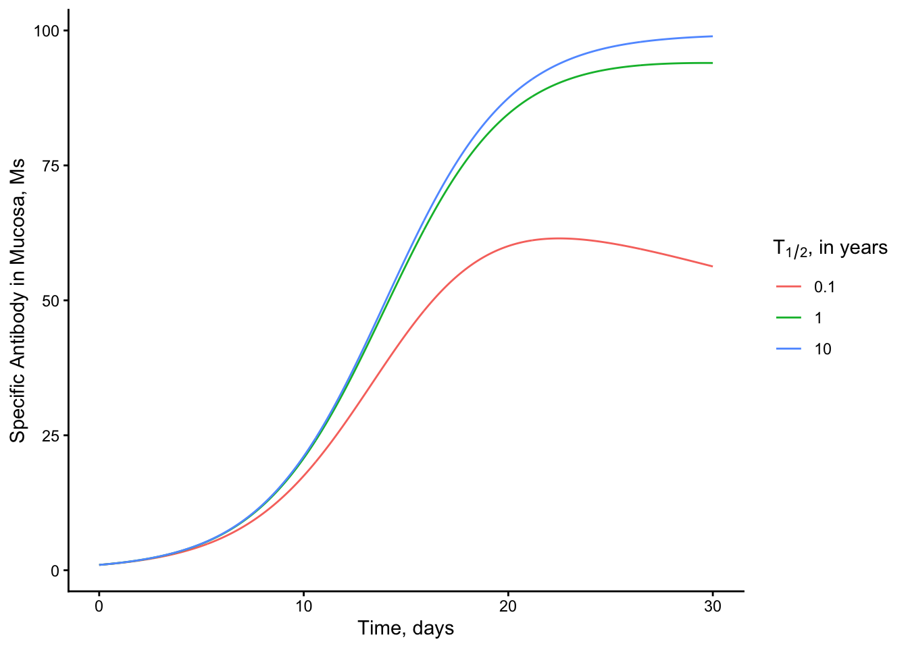

── Conflicts ────────────────────────────────────────── tidyverse_conflicts() ──
✖ dplyr::combine() masks gridExtra::combine()
✖ dplyr::filter() masks stats::filter()
✖ dplyr::lag() masks stats::lag()
ℹ Use the conflicted package (<http://conflicted.r-lib.org/>) to force all conflicts to become errors
The goal of this document is to calculate the extent to which pre-exisiting, non-specific IgA antibodies interfere with he transport of newly generated, specific IgA across the mucosal epithelium (where it will be useful.)
Outline
We can calculate the pre-existing, non-specific antibody titer in two ways:
we can solve for the steady state analytically, given the equation from \code\2_IgA_transport.qmd. This saves time, space, and is simpler. Or,
we can solve for the steady state by solving the ode describing the dynamics of IgA change in the mucosa over time, and extracting the average non-specific titer at steady state. This might be useful if we consider adding other compartments or more complex dynamics reflective of the biology of IgA that complicate the calculation of the steady-state concentration.
Simulation
We want to vary the decay rate. \(d_\mu\), and extent of competition, \(K\); or vary the diffusion of non-specific IgA from serum. Lets calculate the ss for changing d_mu:
t.half =c(.1,1,10) #in yearsVmax =10#maximum rate of IgA transport K =100#concentration of IgA for which transport is half-max## steady state concentration of non-specific IgA f =10#flux of IgA into mucosa from blood per day A0 =100#peak antibody titer for a mucosal response tau =365#time between respiratory infections in days gamma_m = A0/tau + f #constant flow of IgA into mucosal compartment due to local production and flux from the blood d_mu =-log(1/2)/(t.half*365) #decay rate of mucosal IgA in terms of half life, in days Vmax_0 =10# average max transport rate of IgA to lumen per day#newly generated IgA r =log(A0)/7# exponential growth of IgA on new infection rho =7#time of peak of response
#half lives for decay rates: t.half =c(.1,1,10) #in years#make list of parmsparms =list(Vmax =10, #maximum rate of IgA transportK =100, #concentration of IgA for which transport is half-max## steady state concentration of non-specific IgAf =10, #flux of IgA into mucosa from blood per dayA0 =100, #peak antibody titer for a mucosal responsetau =365, #time between respiratory infections in daysgamma_m = A0/tau + f, #constant flow of IgA into mucosal compartment due to local production and flux from the bloodd_mu =-log(1/2)/(t.half*365), #decay rate of mucosal IgA in terms of half life, in daysVmax_0 =10, # average max transport rate of IgA to lumen per day#newly generated IgAr =log(10^2)/14, # exponential growth of IgA on new infectionrho =14) #time of peak of response)
below we calculate the steady states for varying \(d_\mu\)
# define changing variabled_mus =-log(1/2)/(t.half*365)#calculate from functionMns_ss =sapply(d_mus, function(d) {Mns_SteadyState(A0 = parms$A0, tau = parms$tau, f = parms$f, Vmax_0 = parms$Vmax, d_mu = d, K = parms$K)})print(Mns_ss)
[1] 193.7124 758.0020 3092.2593
and here I check (because that feels wrong):
# define changing variabled_mus =-log(1/2)/(t.half*365)## simulation parameters Tmax =100*365#20 # max time in yearspoints.per.day =24# output points per yearduration.of.steady.state =5*365# duration in days for averaging steady state for seasonal## initial conditions init.cond =c(Mns =1) # initial mucosal iga#iterate through mucosal decay rates and solveMns_odes =lapply(d_mus, function(d_mu){#change d_mu parameter in the parms list parms$d_mu = d_mu#calculate dynamics soln =as.data.frame(ode(y = init.cond, times =seq(0, Tmax, length.out = Tmax*points.per.day), Mns.odes.model, parms = parms)) })
#plot dynamicsplot =ggplot() #create empty plotfor(soln in Mns_odes){ #iterate through model solutions plot = plot +geom_line(data = soln, aes(y = Mns, x = time/365)) +geom_hline(yintercept = Mns_ss, linetype ="dashed") +geom_text(aes(x =c(t.half), y = Mns_ss, label =paste0("T[1/2]==", t.half, "~years")), parse = T, nudge_y =100, nudge_x =10) +#labels ss with corresponding thalftheme_bw()+labs(y ="Mucosal IgA, Total", x ="Time, years")}print(plot)

#extract steady statesMns_odes_SS =sapply(Mns_odes, function(soln){ Mns = soln$Mns #extract vector of titer over time ss =mean(tail(Mns, duration.of.steady.state*points.per.day))})#compare ss from ode to ss from calculationMns_ss #from calculation
[1] 193.7124 758.0020 3092.2593
Mns_odes_SS #from ode numerical solution
[1] 193.7124 758.0020 3092.1940
Still not happy with the parms but at least the calculation is correct!
Below, we simulate a response over the course of month and observe the change in specific antibodies in the mucosa \(M_S\) over time:
# response parameterstimes =seq(0, 30, by =1/24) #1 month, calculated by hour# specific antibody titer over timeM_s =sapply(d_mus, function(d_mu) {sapply(times, function(t) {M_specific(A0 = parms$A0, r = parms$r, rho = parms$rho, d_mu = d_mu, t = t) })}) %>%as.data.frame()#add time column M_s =cbind(times, M_s) %>%as.data.frame()colnames(M_s) =c("time", t.half) #name columns for easy referenceM_s.longer = M_s %>%#pivots to long form for easier plottingpivot_longer(cols =!time, names_to ="decay",values_to ="Ms")# plot dynamicsplot =ggplot() +geom_line(data = M_s.longer, aes(x = time, y = (Ms), group = decay, color = decay)) +theme_classic() +labs(x ="Time, days", y ="Specific Antibody in Mucosa, Ms", col =expression(paste("T"[1/2], ", in years"))) #print to viewerprint(plot)

Phi.s_l =sapply(d_mus, function(d_mu){sapply(times, function(t) {#calculate ss M_ns M_ns =Mns_SteadyState(A0 = parms$A0, tau = parms$tau, f = parms$f, Vmax_0 = parms$Vmax, d_mu = d_mu, K = parms$K)#calculate M_s at that time M_s =M_specific(A0, r, rho, d_mu, t)# calculate flux of specific IgAreturn(specific_flux(Vmax = parms$Vmax, K = parms$K, M_ns = M_ns, M_s = M_s)) })}) %>%cbind(times, .) %>%# add time columnas.data.frame() #format as data frame# add column namescolnames(Phi.s_l) =c("time", t.half)# pivot to long form Phi.s_long = Phi.s_l %>%pivot_longer(cols =!time, names_to ="t.half",values_to ="flux")
# plot flux for each decay rate over timeplot =ggplot() +geom_line(data = Phi.s_long, aes(x = time, y = flux, group =as.factor(as.numeric(t.half)), col =as.factor(as.numeric(t.half)))) +theme_bw() +labs(x ="days post infection", y ="flux of specific IgA", col =expression(paste("T"[1/2], ", in years")))print(plot)